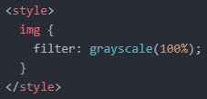
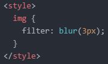
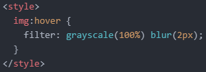

- '필터(filter)'에 대해 알아보기
오늘은 필터 기능에 대해 알아보겠습니다.
이 기능은 이미지에 다양한 효과를 줄 수 있는 기능입니다.
다음 링크를 클릭하시면 필터를 이용한 몇 가지 결과물을 볼 수 있습니다. (클릭)
필터를 이용하는 방법은 간단합니다.
우선, 다음과 같이 사진 하나를 준비합니다.
여러 필터 기능들 중 가장 먼저 흑백화 기능을 적용해 보겠습니다.
방법은 'filter: grayscale(0~100%);'과 같이 선언해 주면 됩니다.
이때 퍼센트 값이 100%에 가까워질수록 이미지는 점점 흑백화됩니다.
퍼센트 값이 100%일 때의 결과는 아래와 같습니다.

이번에는 'blur' 기능을 적용해 보겠습니다.
'blur' 기능은 이미지를 흐리게 만들어줍니다.
방법은 'filter: blur(?px);'과 같이 선언해 주면 됩니다.
물음표에는 숫자를 적어주시면 됩니다.
당연히 큰 숫자를 적을수록 더 많이 흐려지게 됩니다.
저는 3px을 적용했습니다.

흑백 기능도 적용하고 싶다면, 'filter: grayscale(100%) blur(3px);'과 같이 작성해 주면 됩니다.
참고로 마우스를 가져다 댔을 때 효과가 적용되도록 만들 수 있습니다.
조금 오래전에 'hover'라는 가상 클래스 선택자를 배운 적이 있습니다. (참조)
바로 이 선택자를 이용하는 것입니다.
다음과 같이 말이죠.

그럼 마우스를 가져다 댔을 때 효과가 적용되는 것을 알 수 있습니다.
필터 기능에는 여러 가지가 있지만 위 두 가지만 설명하고 여기서 마치겠습니다.
나머지 기능들은 아래 두 링크 중 하나를 클릭해서 직접 눈으로 확인하시면 됩니다.
선언 방법도 간단하니까 금방 익힐 수 있습니다.
링크 1. https://css-playground.com/view/39/css-filter-playground
링크 2. https://css-tricks.com/almanac/properties/f/filter/
그럼 오늘은 여기까지 하겠습니다.
내일도 화이팅!